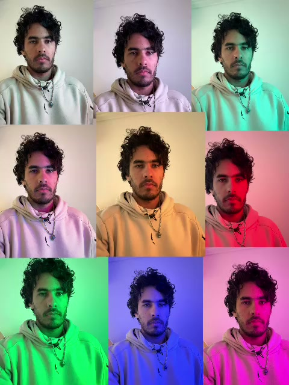

Diario de aprendizaje
Lo que voy aprendiendo, lo que me cuesta y cómo evoluciono en conexión, musicalidad y presencia.
Leandro Rodríguez
Soy Leandro Rodríguez: software engineer, estudiante de Ciencias de la Computación, actor y bailarín de bachata en formación.
Un mismo proceso de búsqueda entre la lógica del software y la expresión del cuerpo.
01 — Mi historia
Vengo del mundo lógico del software. Trabajé años construyendo sistemas, resolviendo problemas y pensando en estructuras. Ese mundo me formó y sigue siendo parte de lo que hago: no lo dejé atrás.
En paralelo empecé a explorar otros lenguajes: el del escenario y el del baile. La actuación y la bachata me pusieron frente a algo que el código no exige de la misma manera —estar presente, conectar, equivocarme en vivo y seguir.
No es una historia de “dejé todo para perseguir un sueño”. Es más matizada: sigo estudiando, sigo trabajando en tecnología y, al mismo tiempo, estoy aprendiendo a salir de la cabeza y entrar en el cuerpo. Es un proceso, con disciplina y con contradicciones, que todavía estoy definiendo.
“Eyes are the window of the soul.”
02 — Bachata
Estoy aprendiendo y desarrollándome como bailarín de bachata dentro de la comunidad de Buenos Aires. Me formo en Instinto Bachata y en Buenos Aires Bachata, y curso un instructorado en Sinergia. Estoy en formación: documento el camino, no lo doy por terminado.
Lo que voy aprendiendo, lo que me cuesta y cómo evoluciono en conexión, musicalidad y presencia.
Práctica, repetición y trabajo técnico. El detrás de escena del progreso.
Piezas trabajadas paso a paso, del ensayo a la puesta.
La diferencia entre practicar una coreografía y bailar social, y las experiencias en la pista.
Reflexiones y aprendizajes de la formación que estoy cursando en Sinergia.
Dejar de calcular cada movimiento, soltar la rigidez y ganar confianza.
Videos y registros del proceso: próximamente.
03 — Actuación
Actúo en Juglares. Me interesa desarrollar mi identidad como artista y actor: la interpretación, la presencia escénica y el trabajo con el cuerpo y la vulnerabilidad.
El escenario y la pista de baile se tocan: los dos piden estar presente, escuchar y expresarse sin calcularlo todo.

04 — Tecnología
Backend Software Engineer con más de 6 años de experiencia. Durante cuatro años en Mercado Libre desarrollé y operé sistemas críticos de fulfillment, inventario, recomendaciones y cargos para operaciones de Latinoamérica, Estados Unidos y China. Mi foco está en Java, Spring Boot y los sistemas distribuidos.
Sistemas distribuidos de alcance regional: cargos de fulfillment, tarifas de retiros y beneficios sobre warehouses para LatAm, EE.UU. y China. Antes, paneles de stock y recomendaciones para vendedores procesando millones de recomendaciones por minuto, con foco en rendimiento, testing y observabilidad.
Sistema en C#/.NET de alineación y segmentación de variables por coordenadas geográficas para procesar datos espaciales.
Servicios y APIs backend en C#/.NET y funcionalidades Angular para aplicaciones empresariales globales.
Algoritmos y Estructuras de Datos II: clases de apoyo, explicación de algoritmos y corrección de evaluaciones.
Además, exploro por interés el desarrollo de videojuegos y experiencias de realidad virtual.
05 — Proyectos
Un espacio para integrar proyectos de software, videojuegos, realidad virtual, contenido y experimentos que combinan tecnología, arte y movimiento.
Estoy preparando esta sección.
Pronto vas a encontrar acá proyectos reales, con su contexto y sus enlaces.06 — Bitácora
Una sección editorial para escribir sobre aprendizajes de bachata, la relación entre programar y bailar, experiencias escénicas y la disciplina de sostener varias búsquedas a la vez.
Podría esperar. Esperar a terminar el instructorado, a que las figuras salgan limpias, a tener algo más parecido a un resultado. Pero si algo aprendí en años de construir software es que los sistemas no aparecen terminados: se iteran. Esta bitácora es eso — versiones.
Acá voy a escribir sobre lo que estoy aprendiendo en bachata, sobre actuar, sobre estudiar computación mientras trabajo, y sobre el experimento de sostener todo eso a la vez sin que se caiga nada. (Spoiler: a veces algo se cae.)
No espero que sea prolijo. Espero que sea honesto.
Cuando un programa falla, hay método: reproducís el error, lo aislás, mirás qué esperabas y qué pasó de verdad, corregís, probás de nuevo. Me descubrí haciendo exactamente lo mismo con un paso que no me salía: ¿es el peso? ¿es el tiempo? ¿estoy llegando tarde al 1?
La diferencia es que el cuerpo no tira stack trace. No hay un log que te diga en qué línea te caíste. Hay que sentir dónde está el error — y sentir es, justamente, la habilidad que vengo a entrenar.
Lo gracioso es que el método sirve igual: aislar, repetir, ajustar. Solo que acá el test pasa cuando dejás de pensarlo.
Mi mejor herramienta de trabajo es pensar: analizar, anticipar, modelar el problema antes de tocar el teclado. En la pista, esa misma herramienta se convierte en mi principal obstáculo — cuanto más pienso el movimiento, más rígido sale.
La bachata me está pidiendo algo que ningún trabajo me pidió: presencia. Escuchar la música, escuchar a la otra persona y confiar en que el cuerpo ya sabe lo que practicamos.
Todavía no me pasa seguido. Pero los momentos en los que pasa —esos segundos en los que no estoy calculando nada— son la razón por la que sigo yendo.
Nuevas entradas a medida que el proceso avance.
07 — Contacto
Colaboraciones artísticas, proyectos tecnológicos, actuación, bachata, producción de contenido u oportunidades profesionales. Si algo de esto resuena, escribime.
Buenos Aires, Argentina.